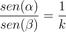

Trigonometria e Raios Luminosos

Encontrando a Lei de Snell
A ferramenta ao lado funciona de modo semelhante à anterior, porém esta permite a você emitir o raio de luz a partir da água. Para tanto, basta movimentar o ponto azul para a parte azulada (parte de baixo).
Agora que o raio é emitido a partir da água, note que os ângulos de saída são maiores do que os de entrada, ao contrário do que vinha acontecendo anteriormente.
Mas será que esses ângulos têm alguma relação com os que foram observados durante a análise do raio que ia do ar para a água?
Note que os ângulos de saída obtidos nos itens B das duas questões anteriores são iguais aos de incidência dos itens A das mesmas questões, e vice-versa. Isso ocorre porque a luz faz a mesma trajetória, independentemente da origem do raio.
Para analisar esse novo caso, basta inverter o que tem sido chamado de “ângulo de saída” e “ângulo de entrada”. Logo, a relação entre o seno dos ângulos para o caso do raio partindo da água será:

Corrigir todas as questões Continuar